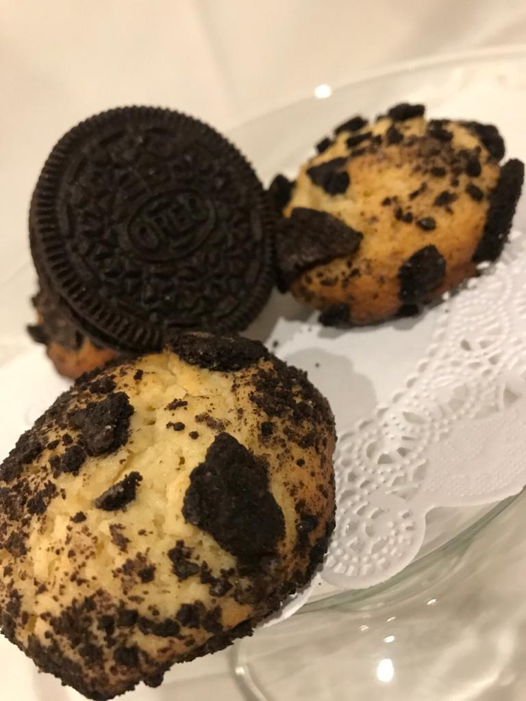

Kukiz |
|||
|  | Kukiz son nuestras galletas, que como podras notar en las fotos, son esponjosas y no planas como las de cadenas comerciales. | Tenemos sabores de cheesecake de oreo, cheesecake de macarron, cheesecake con variedad de cereales, cheesecake con oblea, brownie, chispas de chocolate, zanahoria, rugelach rellena de manzana-canela o zarzamora con queso. | Nuestras Kukiz se venden por bolsita de 4 o por docena, puedes pedir mezclado, pero el pedido mínimo por tipo de galleta es media docena. |